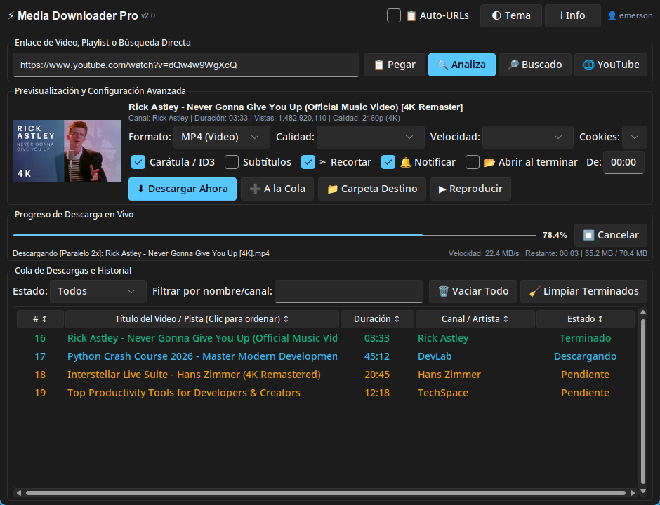

La suite de escritorio definitiva para YouTube, TikTok, Instagram, Twitter/X, SoundCloud y +1000 sitios. Con recorte de fragmentos, descargas paralelas, buscador integrado y conversión real a MP3 a 320 kbps.

Compatible con más de 1.000 plataformas y redes sociales
Diseñado con estándares de alto rendimiento para ofrecer la máxima velocidad, fidelidad de audio y control total sobre tus descargas.
Ensamblado automático con FFmpeg de video en ultra alta definición y audio original sin pérdidas de calidad ni compresión destructiva.
Conversión de audio real a MP3, M4A, WAV y FLAC. Incrusta automáticamente título, artista, año y la carátula original en alta resolución.
¿Solo necesitas el estribillo o un fragmento? Especifica inicio y fin (ej. 00:30 a 02:15) y descarga solo esa sección con precisión de fotogramas.
Busca videos y canciones directamente dentro de la app por palabras clave. Visualiza los mejores resultados y descárgalos con un solo clic.
Pool de concurrencia optimizado para descargar hasta 4 archivos simultáneos al vaciar listas o playlists sin saturar el sistema.
Si YouTube limita los subtítulos con el error HTTP 429, el motor se recupera automáticamente para que tu descarga nunca falle.
Importa sesiones de Firefox, Chrome, Brave o Edge para descargar videos con restricción de edad o playlists privadas de tu propia cuenta.
Reproduce cualquier archivo descargado con doble clic o botón rápido. Historial filtrable por estado y búsqueda en vivo.
Notificaciones de escritorio al finalizar descargas y opción para suspender el equipo automáticamente tras completar toda la cola.
Construido con el tema Sun Valley para Tkinter. Soporte completo para alternar entre tema oscuro y claro en tiempo real.
Compara Media Downloader Pro frente a los descargadores web convencionales y las apps comerciales de pago.
| Característica | Media Downloader Pro | Descargadores Web Clásicos | Apps de Pago ($30+) |
|---|---|---|---|
| Resolución Máxima | 4K / 8K a 60 FPS | 720p (raro 1080p) | 4K / 8K |
| Publicidad y Malwares | CERO (100% Limpio) | Plagado de pop-ups y virus | Sin anuncios |
| Conversión Real a MP3 | Hasta 320 kbps con FFmpeg | Comprimido a 128 kbps | Hasta 320 kbps |
| Incrustación de Carátula y Metadatos | Automático en Alta Res. | No soportado | Solo en versión Pro |
| Recorte de Fragmentos (Trim) | Integrado y Preciso | No soportado | Requiere editor extra |
| Descargas Simultáneas en Paralelo | Hasta 4x Hilos Paralelos | 1 por 1 con esperas | Soportado |
| Precio / Licencia | 100% Gratis y Open Source | Gratis pero inseguro | $39 USD o suscripción |
Compatible de forma nativa con Linux (Garuda/Arch, Ubuntu, Debian), Windows 10/11 y macOS.
# 1. Clona el repositorio
git clone https://github.com/EmersonGt124/Media_Video_Downloader_V1.0.git
# 2. Entra a la carpeta e instala dependencias
cd Media_Video_Downloader_V1.0 && pip install pillow sv-ttk
# 3. Inicia la aplicación (yt-dlp viene incluido)
cd PROYECTO && python3 Media_Downloader.py
Arch, Garuda, Ubuntu, Debian, Fedora. Requiere ffmpeg.
sudo pacman -S ffmpeg
Soporta Fluent UI modo oscuro y notificaciones toast.
winget install Gyan.FFmpeg
Compatible con Apple Silicon M1/M2/M3 e Intel.
brew install ffmpeg
Sí. Es un proyecto de código abierto bajo la licencia Mozilla Public License 2.0. No contiene malware, rastreadores ni anuncios de ningún tipo.
YouTube suele limitar peticiones automáticas de subtítulos con el error HTTP 429. Si esto ocurre, el motor se auto-recupera de inmediato y descarga el video completo con su carátula sin cancelar la tarea, informándote amigablemente.
Para video: MP4 (con calidades desde 360p hasta 4K/8K a 60 FPS). Para audio: MP3 (320 kbps, 256 kbps, 192 kbps), M4A, WAV y FLAC sin pérdidas.
Sí. Al pegar el enlace de una lista de reproducción, el programa detecta todos los videos y te permite agregarlos a la cola para descargarlos todos desatendidamente o en paralelo (hasta 4x simultáneos).